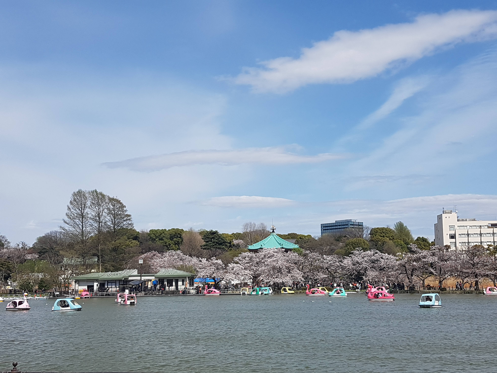

I was born in London Ontario but I wasn't raised in here. I actually lived in Tokyo Japan for 6 years. I travel to Japan quite often and visit my family. I found this program from my friend's father that works at this campus! Thanks Craig 😋 I originally wanted to do Theatre Tech and work at concerts. Weird dream of mine, but I still have a dream to work with music one day. I like this program because I like the coding and creating aspect of businesses. I currently work at the mall at Bluenotes as a supervisor. I live at home with my mom, my dog and I'm currently rescuing a squirrell. I absolutely love animals.
I was born in Edmonton but raised here in London, Ontario. I always loved being in London because although it's a small city it sure has a lot going for it. Companies and Studios are always growing and my future goal is to be a part of it! I currently work at American Eagle as a Jean Expert. I have a few hobbies but as of now I do a lot of photography in my spare time. I also do music production on the side and love to create instrumental music which I end up releasing on Spotify and Apple Music. This is just a small passion of mine but would love to get into design as a career whether it's image, video or even music. I took this program because media is something I've always been into and it's always interested me. I've also been doing a lot of concept art including a game my friend is currently working on.
We both love playing Legend of Zelda. We both talked about how much we like playing the new game Breath of the Wild.
We both like Asian food. You can't go wrong with Asian food. What more can we say?
One of our favourite shows is Game of Thrones. We're both eagerly waiting for the next season.